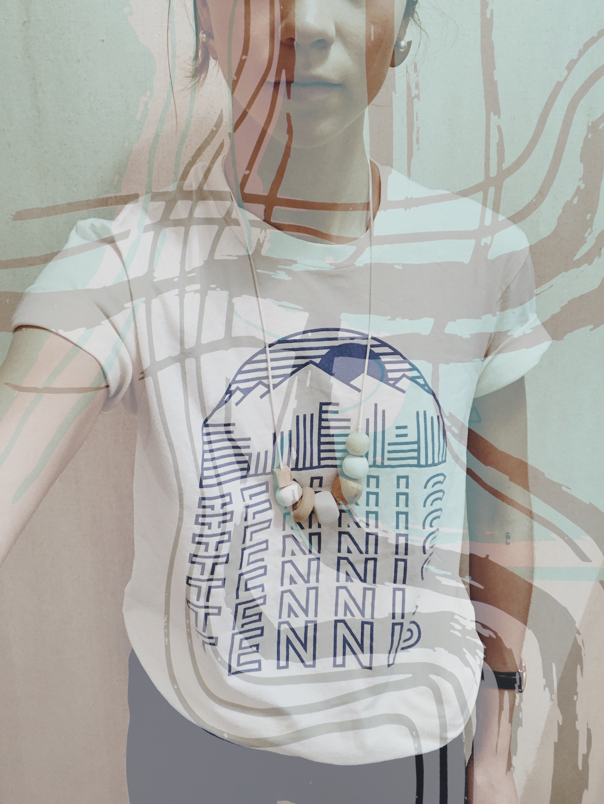

About Me
Born in Michigan and now residing in Raleigh, NC! I am an illustrator, designer, screenprinter and sandwich lover. I have an orange cat who can pee in the toilet. His name is Argonaut. I did not train him how to pee in the toilet... he figured that one out on his own. My favorite color changes daily! I really like olives, but not as much as sandwiches.
Fun fact --> my nostrils are different shapes... I like to think this is what caused my tendency to slightly break the rules. If my nostrils can't conform, you can't expect me to either. Pretty sure that is nature, or something like it. Nice to meet ya!
Connect with Me